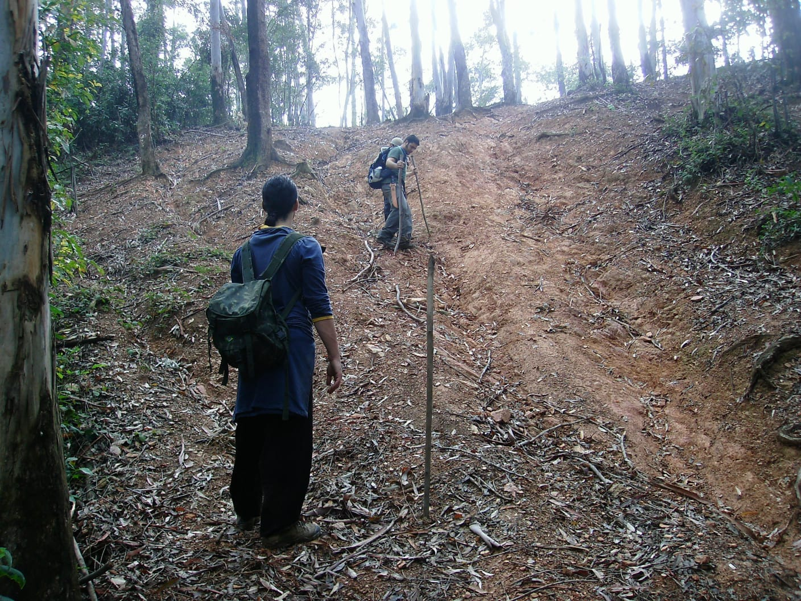
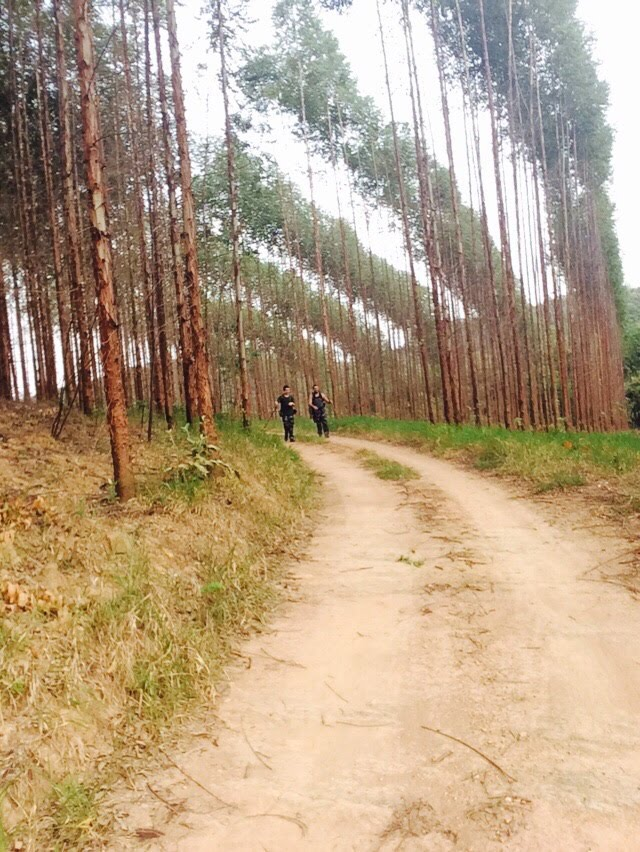
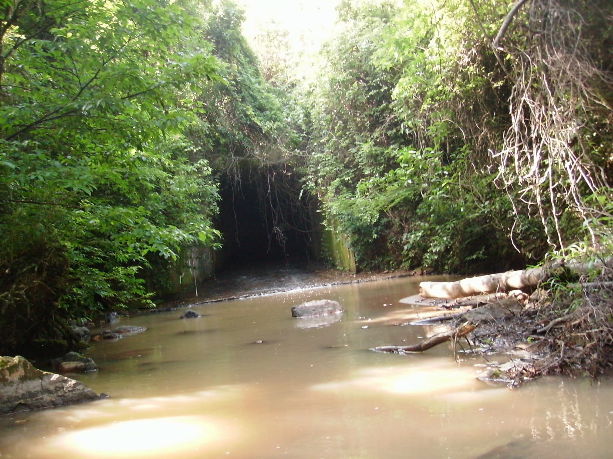
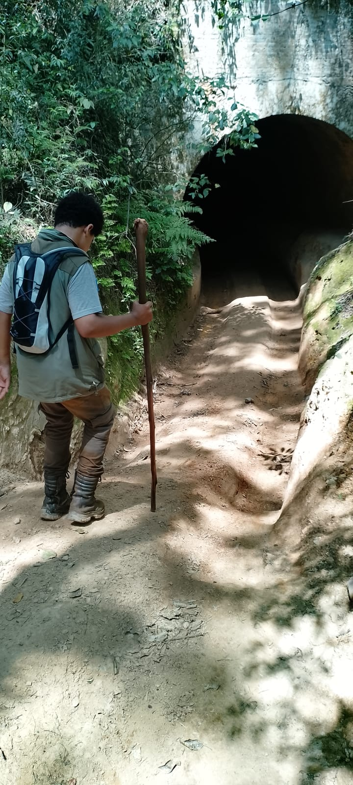
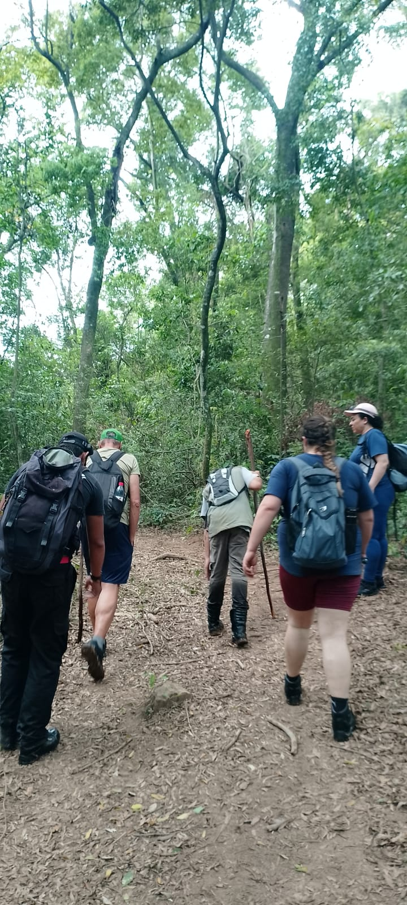
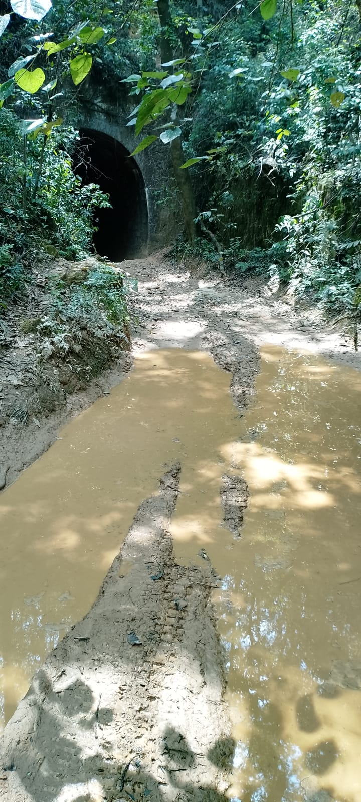
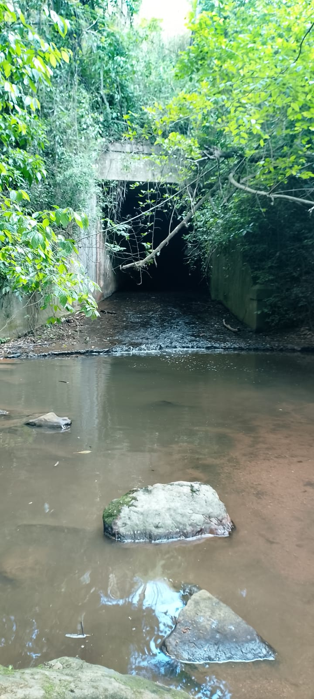
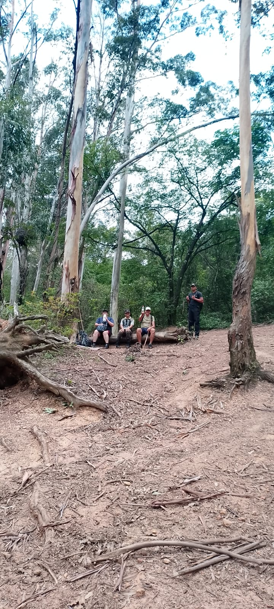
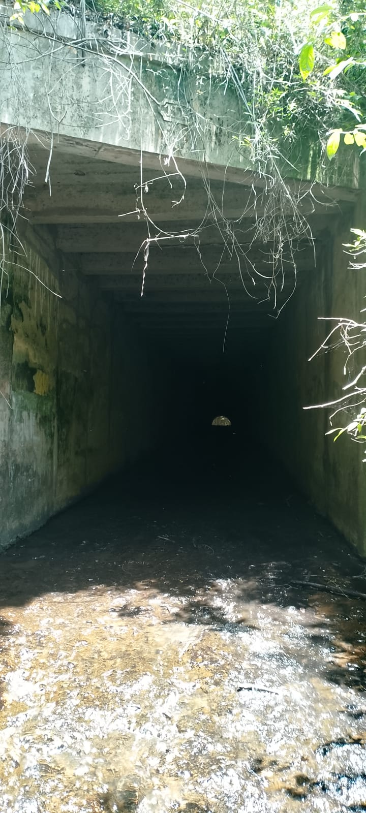

Trilhas
Caminhos cercados pela mata para quem busca aventura e movimento.

Descubra caminhos, rios, túneis e paisagens que transformam uma simples caminhada em uma experiência de conexão com a natureza.
O ecoturismo aproxima pessoas de ambientes naturais de maneira responsável.
Cada trilha revela uma nova paisagem, cada parada cria uma memória e cada passo reforça a importância de preservar.
Conheça a jornada →Caminhe, explore, contemple e descubra diferentes formas de viver a natureza.

Caminhos cercados pela mata para quem busca aventura e movimento.

Rios e cursos d'água criando pausas naturais durante a jornada.

Estruturas, caminhos e lugares que despertam a curiosidade.

Experiências compartilhadas que tornam a aventura ainda mais especial.
Uma caminhada pode ser vista como um percurso. Nós preferimos enxergá-la como uma narrativa.
A experiência começa antes mesmo da trilha. O preparo, a expectativa, o encontro com o grupo e a descoberta de cada cenário fazem parte da aventura.
Continuar pela galeria →Clique nas imagens para visualizar cada momento em tela cheia.




O ecoturismo nasce do equilíbrio entre aventura e responsabilidade. Conhecer ambientes naturais significa respeitar seus limites, reduzir impactos e ajudar a manter esses lugares vivos para as próximas gerações.
Não retire plantas, pedras ou elementos do ambiente.
Leve seu lixo de volta e preserve as trilhas.
Observe os animais à distância.
Siga caminhos autorizados e respeite as orientações locais.